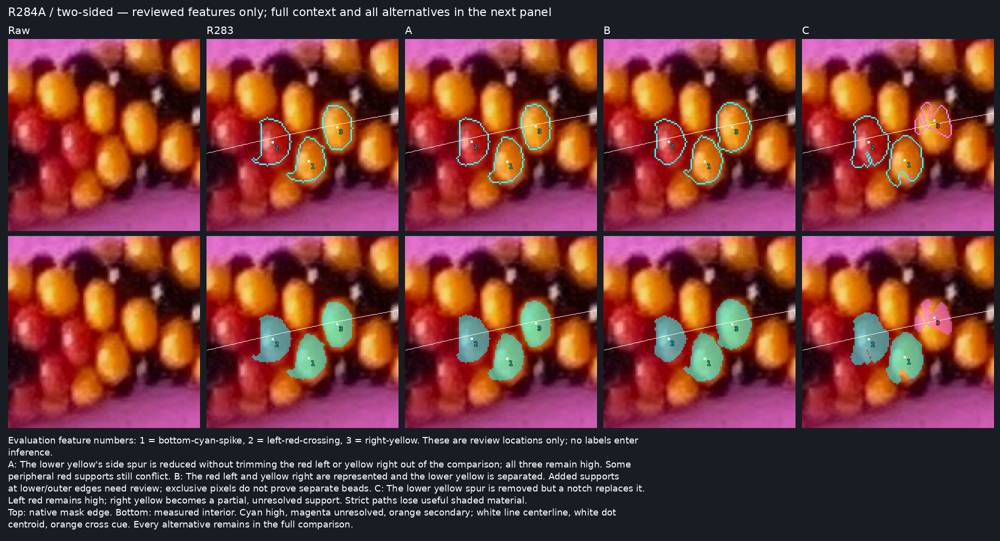
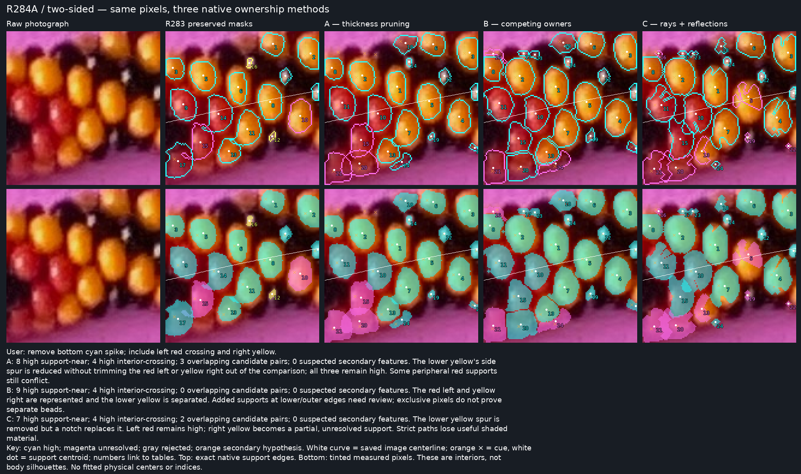
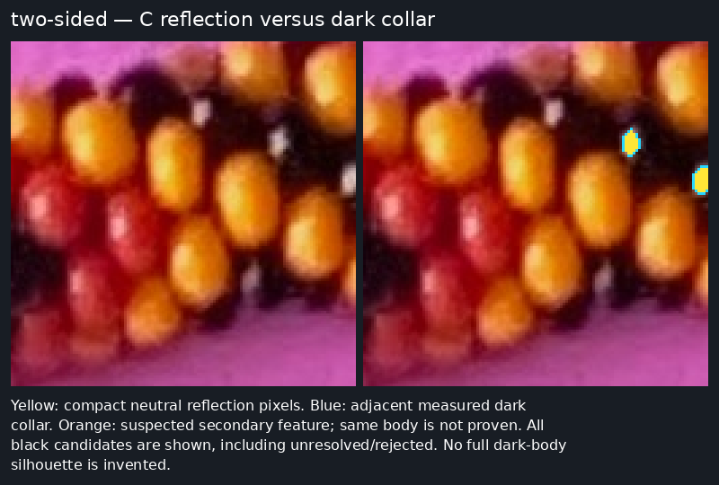

two-sided
User: remove bottom cyan spike; include left red crossing and right yellow.

Native 128×128 crop · 4× enlargement · Exact mask records
C: reflection and dark-body evidence separately


A: 8 high support-near; 4 high interior-crossing; 3 overlapping candidate pairs; 0 suspected secondary features. The lower yellow's side spur is reduced without trimming the red left or yellow right out of the comparison; all three remain high. Some peripheral red supports still conflict.
B: 9 high support-near; 4 high interior-crossing; 0 overlapping candidate pairs; 0 suspected secondary features. The red left and yellow right are represented and the lower yellow is separated. Added supports at lower/outer edges need review; exclusive pixels do not prove separate beads.
C: 7 high support-near; 4 high interior-crossing; 2 overlapping candidate pairs; 0 suspected secondary features. The lower yellow spur is removed but a notch replaces it. Left red remains high; right yellow becomes a partial, unresolved support. Strict paths lose useful shaded material.
Method A — all measurements and reasons
| # | Cue ID | Color | Status | Pixels | Cue (native) | Centroid | Side | Near | Min distance | Signed extent | Arc station | Secondary of | Reasons |
|---|---|---|---|---|---|---|---|---|---|---|---|---|---|
| 1 | Q-0104-0094 | yellow | high | 363 | [1251, 290] | [1255.159779614325, 289.9779614325069] | negative | True | 1.8 | -29.3 / -1.8 | 7313.0 | ||
| 2 | Q-0074-0086 | yellow | high | 439 | [1221, 282] | [1226.1002277904329, 280.4031890660592] | negative | False | 18.5 | -44.3 / -18.5 | 7286.0 | ||
| 3 | Q-0164-0066 | yellow | high | 469 | [1311, 262] | [1315.5650319829424, 261.54371002132194] | negative | False | 18.7 | -45.7 / -18.7 | 7376.8 | ||
| 4 | Q-0155-0119 | yellow | high | 446 | [1302, 315] | [1306.9551569506727, 314.85874439461884] | positive | True | 3.6 | 3.6 / 31.9 | 7358.9 | ||
| 5 | Q-0130-0106 | yellow | high | 490 | [1277, 302] | [1281.669387755102, 301.85510204081635] | crossing | True | 0.1 | -14.2 / 15.6 | 7336.5 | ||
| 6 | Q-0133-0057 | yellow | high | 333 | [1280, 253] | [1285.099099099099, 254.51951951951952] | negative | False | 34.7 | -55.6 / -34.7 | 7348.8 | ||
| 7 | Q-0111-0128 | yellow | high | 516 | [1258, 324] | [1262.6763565891472, 325.3468992248062] | positive | True | 3.3 | 3.3 / 33.3 | 7313.0 | ||
| 8 | Q-0049-0078 | yellow | high | 305 | [1196, 274] | [1200.8754098360655, 274.2688524590164] | negative | False | 33.5 | -52.4 / -33.5 | 7263.6 | ||
| 9 | Q-0174-0099 | black | high | 134 | [1321, 295] | [1321.5, 294.0149253731343] | crossing | True | 0.1 | -6.8 / 7.3 | 7376.8 | ||
| 10 | Q-0088-0116 | red | high | 537 | [1235, 312] | [1239.3258845437617, 312.28677839851025] | crossing | True | 0.1 | -14.7 / 16.7 | 7292.8 | ||
| 11 | Q-0058-0109 | red | high | 521 | [1205, 305] | [1209.345489443378, 303.3147792706334] | crossing | True | 0.0 | -28.2 / 2.1 | 7264.7 | ||
| 12 | Q-0147-0085 | black | high | 101 | [1294, 281] | [1294.4950495049504, 280.86138613861385] | negative | True | 10.6 | -24.1 / -10.6 | 7352.2 | ||
| 13 | Q-0095-0152 | yellow | high | 310 | [1242, 348] | [1247.4032258064517, 343.73225806451615] | positive | False | 23.4 | 23.4 / 44.2 | 7293.9 | ||
| 14 | Q-0118-0074 | red | high | 34 | [1265, 270] | [1265.0882352941176, 269.3235294117647] | negative | False | 30.7 | -38.0 / -30.7 | 7326.4 | ||
| 15 | Q-0073-0137 | red | unresolved | 472 | [1220, 333] | [1225.290254237288, 334.22669491525426] | positive | True | 6.4 | 6.4 / 33.8 | 7273.7 | shared-support-owner-unresolved | |
| 16 | Q-0059-0065 | red | rejected | 0 | [1206, 261] | None | no-support | False | — | — | 7271.5 | area-outside-12..870; small-support; concave-support; thin-or-necked; disconnected-or-empty | |
| 17 | Q-0081-0066 | red | rejected | 0 | [1228, 262] | None | no-support | False | — | — | 7291.7 | area-outside-12..870; small-support; concave-support; thin-or-necked; disconnected-or-empty | |
| 18 | Q-0111-0056 | red | high | 233 | [1258, 252] | [1262.107296137339, 253.6480686695279] | negative | False | 41.5 | -57.8 / -41.5 | 7326.4 | ||
| 19 | Q-0136-0136 | red | high | 30 | [1283, 332] | [1283.6333333333334, 331.1] | positive | False | 26.8 | 26.8 / 32.4 | 7332.0 | ||
| 20 | Q-0077-0162 | red | unresolved | 566 | [1224, 358] | [1223.851590106007, 353.934628975265] | positive | False | 27.6 | 27.6 / 50.2 | 7268.1 | shared-support-owner-unresolved; shared-support-owner-unresolved | |
| 21 | Q-0055-0164 | red | unresolved | 622 | [1202, 360] | [1202.977491961415, 359.15755627009645] | positive | False | 24.7 | 24.7 / 51.1 | 7245.6 | weak-pigment-cue; shared-support-owner-unresolved; shared-support-owner-unresolved | |
| 22 | Q-0171-0144 | red | high | 45 | [1318, 340] | [1319.6888888888889, 340.75555555555553] | positive | False | 41.8 | 41.8 / 49.8 | 7366.7 | ||
| 23 | Q-0090-0067 | red | rejected | 0 | [1237, 263] | None | no-support | False | — | — | 7300.6 | area-outside-12..870; small-support; concave-support; thin-or-necked; disconnected-or-empty | |
| 24 | Q-0107-0160 | red | high | 124 | [1254, 356] | [1259.0887096774193, 352.4274193548387] | positive | False | 38.7 | 38.7 / 50.9 | 7302.9 |
Method B — all measurements and reasons
| # | Cue ID | Color | Status | Pixels | Cue (native) | Centroid | Side | Near | Min distance | Signed extent | Arc station | Secondary of | Reasons |
|---|---|---|---|---|---|---|---|---|---|---|---|---|---|
| 1 | Q-0104-0094 | yellow | high | 569 | [1251, 290] | [1254.6678383128294, 289.83128295254835] | negative | True | 0.6 | -33.8 / -0.5 | 7311.8 | ||
| 2 | Q-0074-0086 | yellow | high | 615 | [1221, 282] | [1224.7642276422764, 280.82276422764227] | negative | False | 15.7 | -47.2 / -15.7 | 7284.9 | ||
| 3 | Q-0164-0066 | yellow | high | 561 | [1311, 262] | [1314.2424242424242, 260.80392156862746] | negative | False | 18.4 | -49.0 / -18.4 | 7375.7 | ||
| 4 | Q-0155-0119 | yellow | high | 544 | [1302, 315] | [1305.7169117647059, 315.4834558823529] | positive | True | 3.1 | 3.1 / 34.1 | 7356.7 | ||
| 5 | Q-0130-0106 | yellow | high | 626 | [1277, 302] | [1280.6581469648563, 302.3993610223642] | crossing | True | 0.1 | -15.8 / 17.1 | 7335.4 | ||
| 6 | Q-0133-0057 | yellow | high | 400 | [1280, 253] | [1284.175, 254.0025] | negative | False | 34.3 | -56.8 / -34.3 | 7347.7 | ||
| 7 | Q-0111-0128 | yellow | high | 562 | [1258, 324] | [1262.2758007117438, 325.3950177935943] | positive | True | 2.4 | 2.3 / 34.0 | 7311.8 | ||
| 8 | Q-0049-0078 | yellow | high | 376 | [1196, 274] | [1200.2632978723404, 274.22074468085106] | negative | False | 31.6 | -53.8 / -31.6 | 7262.5 | ||
| 9 | Q-0174-0099 | black | high | 134 | [1321, 295] | [1321.5, 294.0149253731343] | crossing | True | 0.1 | -6.8 / 7.3 | 7376.8 | ||
| 10 | Q-0088-0116 | red | high | 501 | [1235, 312] | [1238.1596806387226, 312.00798403193613] | crossing | True | 0.1 | -13.9 / 16.4 | 7291.7 | ||
| 11 | Q-0058-0109 | red | high | 537 | [1205, 305] | [1207.7355679702048, 303.5921787709497] | crossing | True | 0.0 | -27.6 / 2.2 | 7263.6 | ||
| 12 | Q-0147-0085 | black | high | 101 | [1294, 281] | [1294.4950495049504, 280.86138613861385] | negative | True | 10.6 | -24.1 / -10.6 | 7352.2 | ||
| 13 | Q-0095-0152 | yellow | high | 319 | [1242, 348] | [1247.1128526645768, 344.2382445141066] | positive | False | 23.4 | 23.4 / 44.7 | 7292.8 | ||
| 14 | Q-0118-0074 | red | high | 57 | [1265, 270] | [1265.157894736842, 268.9298245614035] | negative | False | 29.7 | -39.2 / -29.7 | 7326.4 | ||
| 15 | Q-0073-0137 | red | high | 426 | [1220, 333] | [1223.74882629108, 332.99295774647885] | positive | True | 4.2 | 4.2 / 30.3 | 7272.6 | ||
| 16 | Q-0059-0065 | red | unresolved | 115 | [1206, 261] | [1202.8869565217392, 262.495652173913] | negative | False | 44.9 | -59.5 / -44.9 | 7268.1 | concave-support | |
| 17 | Q-0081-0066 | red | high | 46 | [1228, 262] | [1228.0, 262.10869565217394] | negative | False | 45.8 | -52.2 / -45.8 | 7291.7 | ||
| 18 | Q-0111-0056 | red | high | 287 | [1258, 252] | [1261.2160278745644, 253.15331010452962] | negative | False | 42.5 | -59.8 / -42.5 | 7325.3 | ||
| 19 | Q-0136-0136 | red | high | 71 | [1283, 332] | [1283.7042253521126, 330.7464788732394] | positive | False | 23.0 | 23.0 / 34.2 | 7332.0 | ||
| 20 | Q-0077-0162 | red | high | 534 | [1224, 358] | [1225.9456928838952, 356.436329588015] | positive | False | 30.6 | 30.6 / 53.8 | 7269.2 | ||
| 21 | Q-0055-0164 | red | unresolved | 537 | [1202, 360] | [1202.8230912476722, 357.4655493482309] | positive | False | 22.8 | 22.8 / 51.9 | 7246.7 | weak-pigment-cue | |
| 22 | Q-0171-0144 | red | high | 106 | [1318, 340] | [1321.4433962264152, 341.3207547169811] | positive | False | 39.7 | 39.7 / 52.8 | 7367.9 | ||
| 23 | Q-0090-0067 | red | high | 57 | [1237, 263] | [1237.5438596491229, 263.12280701754383] | negative | False | 42.0 | -49.9 / -42.0 | 7300.6 | ||
| 24 | Q-0107-0160 | red | unresolved | 240 | [1254, 356] | [1254.7208333333333, 353.96666666666664] | positive | False | 36.6 | 36.6 / 52.0 | 7298.4 | concave-support |
Method C — all measurements and reasons
| # | Cue ID | Color | Status | Pixels | Cue (native) | Centroid | Side | Near | Min distance | Signed extent | Arc station | Secondary of | Reasons |
|---|---|---|---|---|---|---|---|---|---|---|---|---|---|
| 1 | Q-0104-0094 | yellow | high | 588 | [1251, 290] | [1255.1326530612246, 290.2551020408163] | crossing | True | 0.1 | -33.8 / 0.5 | 7311.8 | ||
| 2 | Q-0074-0086 | yellow | high | 664 | [1221, 282] | [1225.6566265060242, 280.9292168674699] | negative | False | 14.8 | -47.2 / -14.8 | 7286.0 | ||
| 3 | Q-0164-0066 | yellow | high | 619 | [1311, 262] | [1315.8998384491115, 261.40226171243944] | negative | False | 16.7 | -48.5 / -16.7 | 7376.8 | ||
| 4 | Q-0155-0119 | yellow | high | 571 | [1302, 315] | [1306.6112084063047, 315.4886164623468] | positive | True | 2.5 | 2.5 / 34.1 | 7357.8 | ||
| 5 | Q-0130-0106 | yellow | unresolved | 362 | [1277, 302] | [1282.7817679558011, 298.23756906077347] | crossing | True | 0.1 | -15.8 / 9.7 | 7337.6 | concave-support | |
| 6 | Q-0133-0057 | yellow | high | 441 | [1280, 253] | [1285.1020408163265, 254.5487528344671] | negative | False | 32.5 | -56.8 / -32.5 | 7348.8 | ||
| 7 | Q-0111-0128 | yellow | high | 584 | [1258, 324] | [1263.248287671233, 324.4246575342466] | positive | True | 2.7 | 2.7 / 35.2 | 7313.0 | ||
| 8 | Q-0049-0078 | yellow | high | 396 | [1196, 274] | [1200.8686868686868, 274.5050505050505] | negative | False | 31.6 | -53.8 / -31.6 | 7263.6 | ||
| 9 | Q-0174-0099 | black | high | 69 | [1321, 295] | [1320.463768115942, 295.05797101449275] | crossing | True | 0.3 | -3.9 / 6.1 | 7375.7 | ||
| 10 | Q-0088-0116 | red | high | 670 | [1235, 312] | [1239.262686567164, 312.58507462686566] | crossing | True | 0.1 | -15.5 / 18.3 | 7292.8 | ||
| 11 | Q-0058-0109 | red | high | 541 | [1205, 305] | [1210.5323475046212, 305.15341959334563] | crossing | True | 0.0 | -28.4 / 3.3 | 7265.8 | ||
| 12 | Q-0147-0085 | black | high | 53 | [1294, 281] | [1293.8490566037735, 281.2641509433962] | negative | False | 12.5 | -22.3 / -12.5 | 7352.2 | ||
| 13 | Q-0095-0152 | yellow | unresolved | 202 | [1242, 348] | [1244.079207920792, 343.6188118811881] | positive | False | 21.6 | 21.6 / 44.7 | 7290.5 | concave-support | |
| 14 | Q-0118-0074 | red | high | 43 | [1265, 270] | [1265.0, 268.4186046511628] | negative | False | 31.7 | -39.0 / -31.7 | 7326.4 | ||
| 15 | Q-0073-0137 | red | high | 554 | [1220, 333] | [1226.0866425992779, 333.57942238267145] | positive | True | 0.6 | 0.6 / 35.8 | 7274.8 | ||
| 16 | Q-0059-0065 | red | unresolved | 26 | [1206, 261] | [1208.2307692307693, 262.2307692307692] | negative | False | 50.6 | -56.0 / -50.6 | 7273.7 | small-support | |
| 17 | Q-0081-0066 | red | high | 36 | [1228, 262] | [1228.25, 262.1666666666667] | negative | False | 46.0 | -51.8 / -46.0 | 7292.8 | ||
| 18 | Q-0111-0056 | red | high | 94 | [1258, 252] | [1260.095744680851, 256.2659574468085] | negative | False | 42.1 | -55.4 / -42.1 | 7324.2 | ||
| 19 | Q-0136-0136 | red | unresolved | 29 | [1283, 332] | [1282.0, 332.0689655172414] | positive | False | 26.4 | 26.4 / 34.2 | 7329.8 | small-support | |
| 20 | Q-0077-0162 | red | unresolved | 549 | [1224, 358] | [1222.4298724954463, 357.22768670309654] | positive | False | 26.7 | 26.7 / 53.8 | 7265.8 | shared-support-owner-unresolved | |
| 21 | Q-0055-0164 | red | unresolved | 598 | [1202, 360] | [1204.6421404682274, 358.11872909698997] | positive | False | 24.2 | 24.2 / 51.4 | 7247.8 | weak-pigment-cue; shared-support-owner-unresolved; shared-support-owner-unresolved | |
| 22 | Q-0171-0144 | red | unresolved | 13 | [1318, 340] | [1316.0, 339.0] | positive | False | 41.7 | 41.7 / 45.6 | 7363.4 | small-support | |
| 23 | Q-0090-0067 | red | high | 32 | [1237, 263] | [1236.65625, 262.1875] | negative | False | 45.0 | -49.9 / -45.0 | 7300.6 | ||
| 24 | Q-0107-0160 | red | high | 31 | [1254, 356] | [1255.483870967742, 354.61290322580646] | positive | False | 44.3 | 44.3 / 50.2 | 7299.5 |